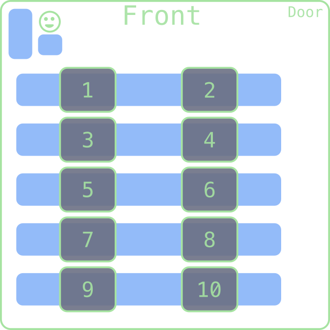

Let’s Talk About Sets
Jed Rembold
April 1, 2026
Welcome to April!
- Scan the QR code or go to https://tools.jedrembold.prof/daily
- Fun group question: What is a set of something that you’d want to collect all of?

Quick Announcements
- Midterm 2 on Friday!
- Practice exam solutions will be posted tonight
- Sections today and tomorrow are for studying up! Come with questions! Utilize the time well!
- We’ll be using the proctor software again
- PSet 4 feedback went out? Working on PSet 5!
Daily LO’s
- What is a set, and how do we create them in Python?
- How can we use set methods to manipulate and create new sets?
- In what situations might using a set be most useful?
Group Problems
Problem 1: Set Tracing
Looking at the sets:
| evens = { 0, 2, 4, 6, 8 } |
| odds = { 1, 3, 5, 7, 9 } |
| primes = { 2, 3, 5, 7 } |
| squares = { 0, 1, 4, 9 } |
What is the set C resulting from:
A = primes.intersection(evens)
B = odds.intersection(squares)
C = A.union(B)- ∅
- { 1, 2, 9 }
- { 1, 3, 4, 5}
- { 0, 3, 4, 5, 7}
Problem 2a: Unique Characters
- This is a coding problem. Work in pairs or trios on a single computer, and discuss your algorithm BEFORE YOU WRITE ANY CODE.
- The file
artemisII.txtcontains a clip from a news article describing today’s hopeful Artemis II launch to send astronauts back around the Moon. - Your task is to read it into Python and then determine how many unique characters are represented in the text.
- There are absolutely ways to do this without using sets, but try to
use them!
- You can convert a string to a set by just saying
set(|||string|||)
- You can convert a string to a set by just saying
Problem 2b: Pangrams
- Swap who is typing!
- A pangram is a word or piece of text that contains every letter of the English alphabet
- Is this block of text a pangram?
- Again, try to use set operations or methods to answer this question. Though you could always check yourself with other methods.
- You probably want to handle the capitalization issue somehow!
Problem 2c: The Extra Letters
- Swap who is typing!
- Which other characters are present in the text that are not
alphabetical characters?
- Again, there are other ways you have to do this, but think about how to use sets
- Print them to the screen as a single string.
Demo
Qwerty vs Dvorak
- I use the Dvorak keyboard layout, where the letters on the home row
are:
"AOEUIDHTNS" - What fraction of words in the English library can I type with purely
those letters, and how does it compare to the classic Qwerty home row of
"ASDFGHJKL"? - Solve with both looping and set approaches. Which is runs faster?